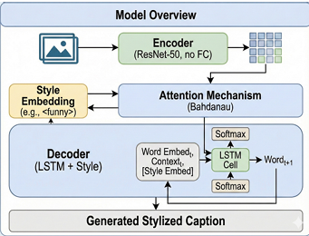
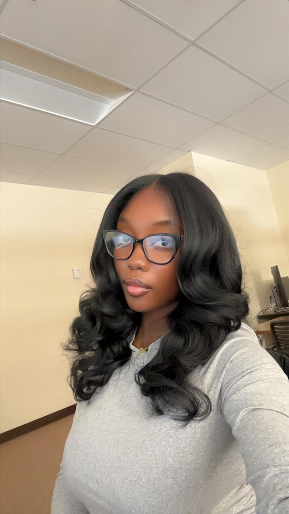
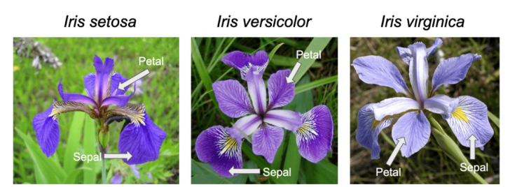
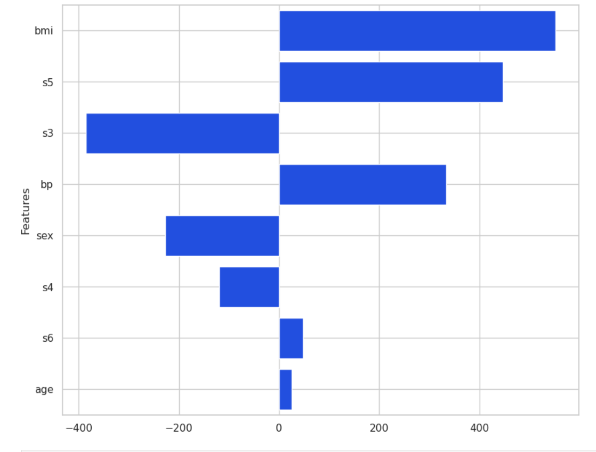
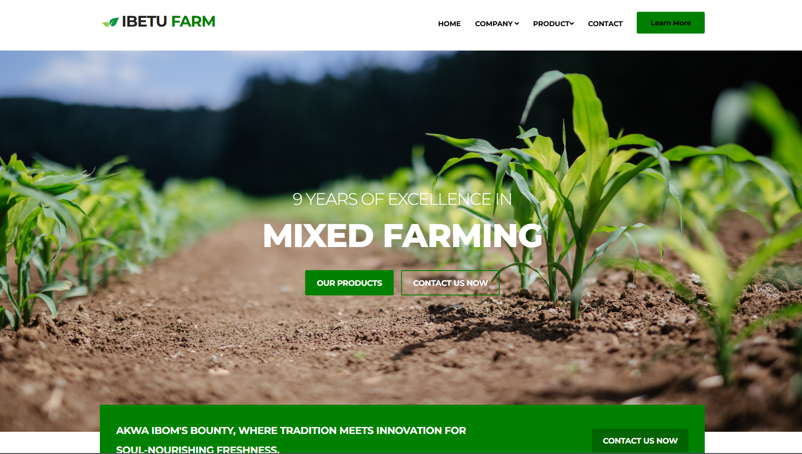
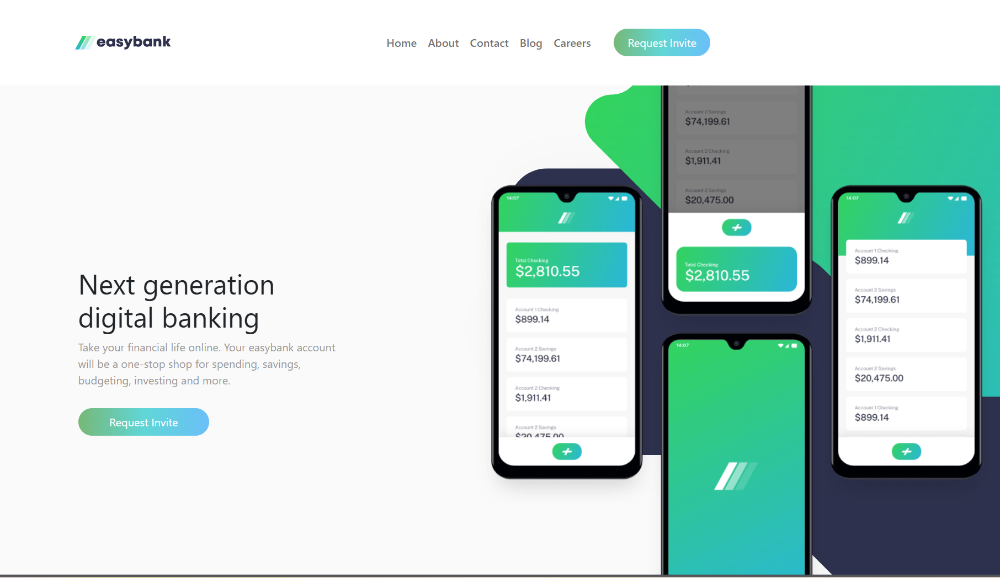

Research · Contributor
Style-Controlled Image Captioning
A ResNet-50 encoder and attention-based LSTM decoder with learnable style embeddings.
View paperAI · Computer vision · Medical imaging
AI graduate student & researcher
I’m an MS Artificial Intelligence student at the University of Wyoming, where I work with Dr. Shivanand Venkanna Sheshappanavar. My research applies computer vision to PCOS analysis through automated follicular structure detection and clinical diagnostics, with a focus on building AI tools for real healthcare needs.

Selected work / 01—06
A selection of machine learning experiments and web experiences, from classification models to responsive product interfaces.

Research · Contributor
A ResNet-50 encoder and attention-based LSTM decoder with learnable style embeddings.
View paper
Machine learning
Classifying iris species from measured flower features.
View project
Applied ML
A supervised learning project for health-risk prediction.
View project
Predictive modeling
Using property features to estimate residential home prices.
View project

Background
Graduate research in artificial intelligence, backed by software engineering training and experience supporting students and building web products.
Tools & methods
Python · PyTorch · scikit-learn · NumPy · Pandas · Git · Computer Vision · Explainable AI
Experience
University of Wyoming
Evaluate student submissions and provide technical feedback on programming assignments and examinations.
Root Hub Accelerator Systems
Built responsive interfaces and contributed to user experience improvements as part of an engineering team.
Association for Computing Machinery, University of Wyoming
Elected to manage chapter budgets, track expenses, and oversee financial operations.
Research & project experience
Current and recent work across medical imaging, image restoration, explainability, and vision-language systems.
Developing a morphology-aware diffusion framework with MAN Attention for ultrasound denoising and automated follicle segmentation.
Studying convolution, attention, and multi-scale embedding strategies for a lightweight deraining front end built around a frozen RAINet backbone.
Have a project or question?
I’m open to research collaborations, applied machine learning roles, and work building accessible, impactful AI systems.